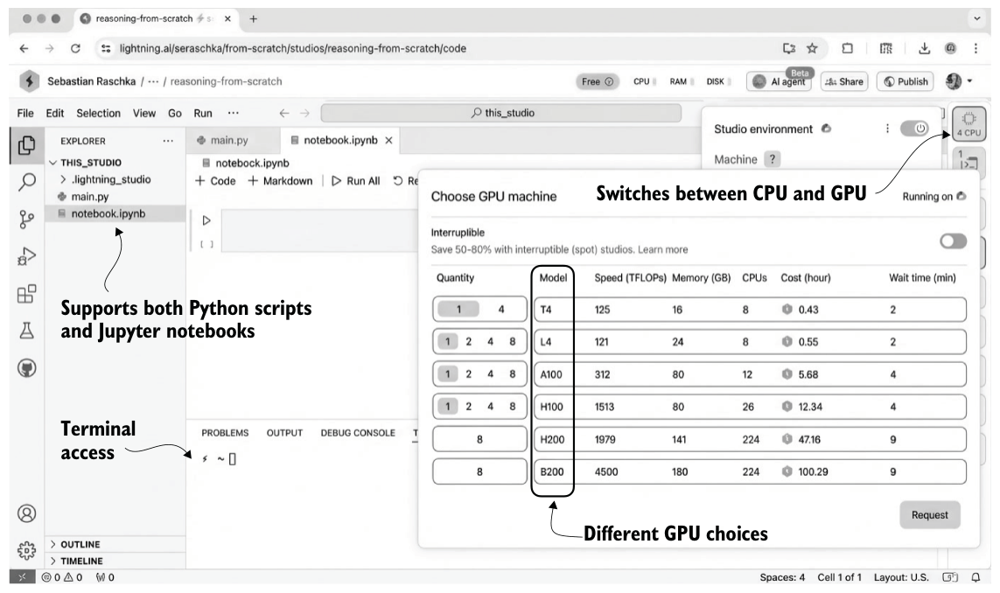

2.3Understanding hardware needs and recommendations
You may have heard that training LLMs is very expensive. For leading LLM companies, it is not uncommon to spend anywhere from $1–$10 million on the low end to more than $50 million on the high end in compute costs to train a new base-model LLM before adding any reasoning techniques.
For example, the DeepSeek V3 model, which serves as the base checkpoint for the DeepSeek R1 reasoning system, was trained on 2,048 NVIDIA H800 GPUs for about 11 weeks at an estimated cost of US$5.5 million. (DeepSeek V3 is one of the few recent models with a fully transparent compute disclosure.) According to the technical report, the final training run used 14.8 million GPU-hours of compute. The energy usage was roughly 620 MWh, about the amount of electricity an average American household uses in 55 years.
These resource requirements and the high price tag would make developing an LLM unfeasible for me and most readers. Instead, we will use a relatively small (but capable) pretrained LLM, on top of which we’ll implement reasoning techniques. This smaller LLM is a scaled-down version that otherwise follows the same architecture as contemporary state-of-the-art models. The reasoning methods that we’ll apply are the same as those used by larger LLMs. The difference is that the smaller LLM will let us explore these methods in a budget-friendly way.
As an analogy, imagine you are curious to learn how cars work. If you are new to cars, you probably wouldn’t start out building an expensive Ferrari right away. Instead, you would start with a more basic car, like a Volkswagen Beetle, which will still teach you a lot about how engines and transmissions work. In fact, I would even say that working on a simpler car would help you better understand how the engine and transmission work because it doesn’t have the complicated refinements of a more expensive car.
While we’ll use a relatively small model in this book, using, developing, and applying the reasoning techniques are still computationally intensive. The techniques in later chapters, such as chapters 5–8, will benefit from a GPU. You can check whether your computer has a PyTorch-supported GPU by running the following PyTorch code in Python:
import torch
print(f"PyTorch version {torch.__version__}")
if torch.cuda.is_available():
print(f"CUDA/ROCm GPU: {torch.cuda.get_device_name(0)}")
elif torch.xpu.is_available():
print(f"Intel GPU: {torch.xpu.get_device_name(0)}")
elif torch.backends.mps.is_available():
print("Apple Silicon GPU")
else:
print("Only CPU")Depending on your machine, the code may return the following results:
PyTorch version 2.10.0
Only CPUDon’t worry if your machine does not have a GPU to run the code. Chapters 2–5 can be run in a reasonable time on a CPU. For some chapters, the code will automatically use an NVIDIA GPU if one is available; otherwise, it will run on the CPU (or an Apple Silicon GPU if recommended for a particular section or chapter). I will provide more information in the relevant sections and chapters.
Like many other AI researchers who work on and with LLMs daily, I don’t have a machine with the necessary GPU hardware to train LLMs at home, so I use cloud resources instead. If you are looking for cloud provider options, my personal preference is Lightning AI Studio (https://lightning.ai/) because of its ease of use and feature support, as shown in figure 2.4. Google Colab (https://colab.research.google.com/) is another good choice.
As of this writing, Lightning AI also offers users free compute credits after the sign-up and verification process, and these can be used for the different GPU choices shown in figure 2.4. (As I’ve mentioned, a GPU is not needed for this chapter, but if you want to use one, the L4 GPU is more than sufficient.)
The supplementary code repository contains additional GPU platform recommendations inside the ch02 subfolder.
